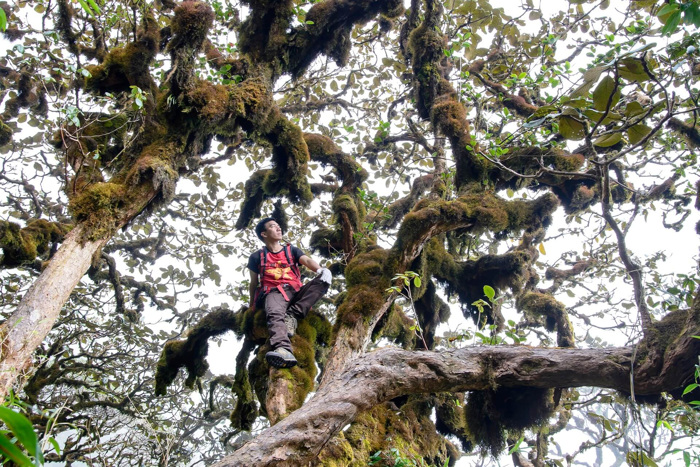
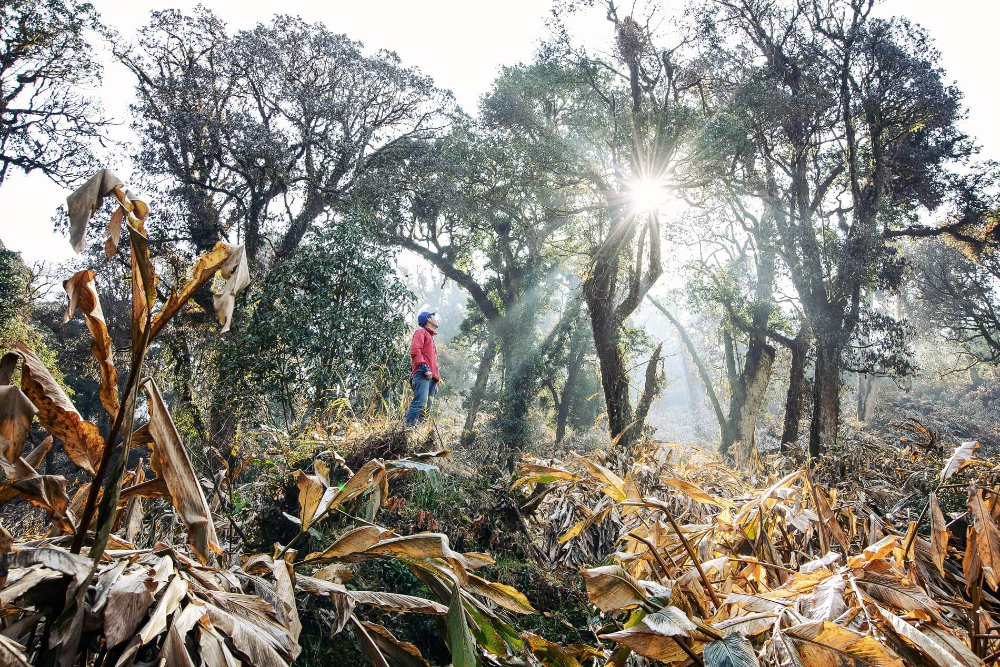
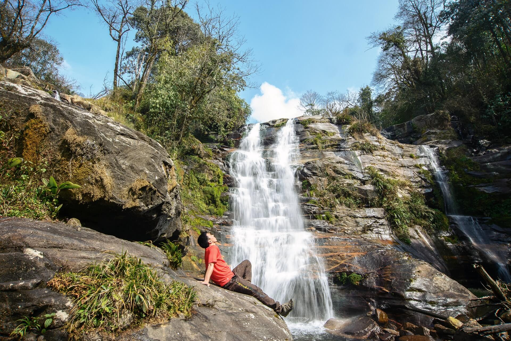

Khang Su Văn (3.012m) là một trong những đỉnh núi cao và hoang sơ bậc nhất Việt Nam, tọa lạc tại xã Pa Vây Sử, huyện Phong Thổ, tỉnh Lai Châu. Nằm uốn lượn dọc theo đường biên giới Việt – Trung, đỉnh núi này không chỉ là một thử thách trekking thuần túy mà còn mang giá trị thiêng liêng nơi biên cương tổ quốc.
Hành trình chinh phục Khang Su Văn sẽ mê hoặc bạn bởi những khu rừng rêu ma mị như cổ tích, thảm rừng trúc bạt ngàn và thế giới hoang dã của những gốc đỗ quyên cổ thụ đại ngàn. Đặc biệt, đây là cung đường duy nhất đưa bạn ghé thăm Cột mốc 79 – cột mốc biên giới cao nhất toàn cõi Việt Nam, ẩn hiện giữa biển mây bồng bềnh quanh năm.
Tour ghép khởi hành cuối tuần. Liên hệ Hidden Path để nhận lịch cụ thể từng tuần.
Đặc điểm nổi bật
Bao gồm & Không bao gồm
✓ Bao gồm
- Xe giường nằm đưa đón Hà Nội – Lai Châu – Hà Nội
- Hướng dẫn viên chuyên nghiệp, am hiểu tuyến biên giới
- Porter địa phương hỗ trợ khuân vác đồ chung 1:1
- Toàn bộ các bữa ăn tiêu chuẩn trong suốt hành trình
- Lều trại, túi ngủ giữ ấm, thảm cách nhiệt chất lượng
- Gậy leo núi chuyên dụng, nước uống đóng chai hàng ngày
- Huy chương vinh danh chinh phục đỉnh Khang Su Văn
✗ Không bao gồm
- Chi phí cá nhân ngoài chương trình
- Đồ ăn vặt, nước ngọt, bia rượu uống riêng
- Trang phục cá nhân và giày leo núi chuyên dụng
- Bảo hiểm du lịch cá nhân
- Chi phí phát sinh ngoài tầm kiểm soát do thời tiết cực đoan
Lịch trình tour chinh phục Khang Su Văn
20h00: Xe giường nằm chất lượng cao của Hidden Path bắt đầu đón quý khách tại điểm hẹn ở Hà Nội. Trưởng đoàn (Guide) gặp gỡ làm quen, kiểm tra lại trang thiết bị cá nhân của các thành viên và phổ biến các quy định an toàn vùng biên giới. Quý khách ổn định chỗ ngồi, nghỉ đêm trên xe để chuẩn bị thể lực tốt nhất.
Bữa ăn: Không. (Quý khách vui lòng tự túc ăn tối trước khi lên xe).
Nghỉ đêm: Ngủ đêm trên xe giường nằm êm ái.
06h30: Xe đến huyện Phong Thổ (Lai Châu). Đoàn di chuyển về bản làm vệ sinh cá nhân, hít hà bầu không khí trong lành của núi rừng Tây Bắc và dùng bữa sáng nạp năng lượng. Trưởng đoàn phân chia đồ đạc, giao vật dụng cho các Porter và hướng dẫn các kỹ thuật di chuyển đường dốc.
08h30: Xe trung chuyển đưa đoàn đến điểm xuất phát tại xã Pa Vây Sử. Hành trình trekking chính thức bắt đầu. Chặng đường đầu tiên tương đối thoai thoải, đưa đoàn đi qua những nương thảo quả xanh mướt, những con suối nhỏ mát lành và tiến sâu vào thảm rừng trúc bạt ngàn rợp bóng.
12h00: Đoàn dừng chân nghỉ ngơi bên bờ suối, thưởng thức bữa trưa picnic dã ngoại do các Porter chuẩn bị chu đáo để lấy lại sức.
16h30: Đoàn chạm chân đến điểm hạ trại ở độ cao khoảng 2.500m. Nơi đây sở hữu tầm nhìn khoáng đạt đón hoàng hôn rực lửa vùng biên viễn. Quý khách nhận lều, thay trang phục khô ấm và tự do thư giãn ngắm cảnh mây trời.
18h30: Thưởng thức bữa tối nóng hổi, thơm lừng với các món nướng đặc sản núi rừng bên bếp than hồng ấm áp. Cả đoàn quây quầy bên đống lửa, nhâm nhi ly trà gừng cay nồng, lắng nghe những câu chuyện ly kỳ về vùng đất biên cương và nghỉ ngơi sớm.
Bữa ăn: Sáng, Trưa, Tối.
Nghỉ đêm: Ngủ lều trại giữa rừng nguyên sinh (đầy đủ túi ngủ và thảm cách nhiệt).
04h30: Đoàn thức dậy trong cái lạnh se buốt của đỉnh cao, dùng bữa sáng nhẹ và nhâm nhi ly cà phê nóng hổi. Mọi người chuẩn bị đồ đạc gọn nhẹ (để lại balo lớn tại lán) cho chặng leo chinh phục quyết định.
05h15: Xuất phát trong sương sớm. Càng lên cao, cảnh quan càng thay đổi ngoạn mục khi đoàn bước vào "thế giới cổ tích" của những khu rừng rêu ma mị, nơi rêu phong phủ kín từ mặt đất lên các thân cây cổ thụ hàng trăm năm tuổi.
08h30: Khảnh khắc vỡ òa tự hào khi chạm tay vào chóp inox đỉnh Khang Su Văn ở độ cao 3.012m! Ngay gần đó là Cột mốc biên giới 79 thiêng liêng – cột mốc cao nhất Việt Nam. Giữa biển mây cuồn cuộn hoành tráng, đoàn chụp ảnh kỷ niệm, nhận huy chương chiến thắng và ngắm nhìn biên cảnh hùng vĩ.
10h30: Sau khi tận hưởng trọn vẹn niềm vui chiến thắng, đoàn bắt đầu hành trình hạ độ cao, quay trở xuống lán nghỉ.
15h00: Về đến điểm cắm trại (2.500m). Buổi chiều là khoảng thời gian thảnh thơi để bạn nghỉ ngơi giãn cơ, trò chuyện cùng các anh em Porter hoặc chụp những bức ảnh check-in lãng mạn quanh lều.
18h30: Bữa tiệc tối thịnh soạn chúc mừng cả đoàn đã chinh phục thành công "Nóc nhà Phong Thổ". Giao lưu văn nghệ giữa núi rừng hoang sơ.
Bữa ăn: Sáng, Trưa, Tối.
Nghỉ đêm: Ngủ lều trại.
06h00: Quý khách thức dậy đón bình minh rực rỡ lần cuối trên núi, dùng bữa sáng ấm áp và thu dọn hành lý cá nhân để bắt đầu hành trình xuống núi trở lại Pa Vây Sử. Đường xuống dốc giúp đoàn di chuyển khá nhanh dưới những tán rừng mát mẻ.
11h30: Về đến chân núi, xe trung chuyển đón đoàn di chuyển về trung tâm thành phố Lai Châu. Đoàn dùng bữa trưa liên hoan tổng kết tour với những món ăn đậm đà hương vị ẩm thực Tây Bắc. (Gợi ý thêm: Bạn có thể tự túc trải nghiệm tắm lá thuốc thảo mộc Dao Đỏ để hồi phục cơ thể).
14h00: Toàn đoàn lên xe giường nằm cao cấp khởi hành về lại thủ đô Hà Nội. Quý khách thoải mái nghỉ ngơi, xem lại những thước phim, hình ảnh tuyệt đẹp trong chuyến đi.
22h30: Xe về đến Hà Nội. Trưởng đoàn chia tay, gửi lời cảm ơn và hẹn gặp lại quý khách trong những hành trình khám phá những đỉnh cao tiếp theo cùng Hidden Path. Kết thúc tour tốt đẹp!
Bữa ăn: Sáng, Trưa.
Độ khó
Tour leo núi Khang Su Văn được đánh giá ở mức Thách thức (4/5) – Do cung đường dốc liên tục, thảm thực vật rậm rạp và địa hình rừng rêu đòi hỏi sự khéo léo, dẻo dai cao. Tour này phù hợp nhất với những ai đã có kinh nghiệm leo núi ít nhất 1 lần và có nền tảng thể lực tốt, yêu thích khám phá những vẻ đẹp hoang dã, nguyên bản.
Chuẩn bị trước tour
Thư viện ảnh


